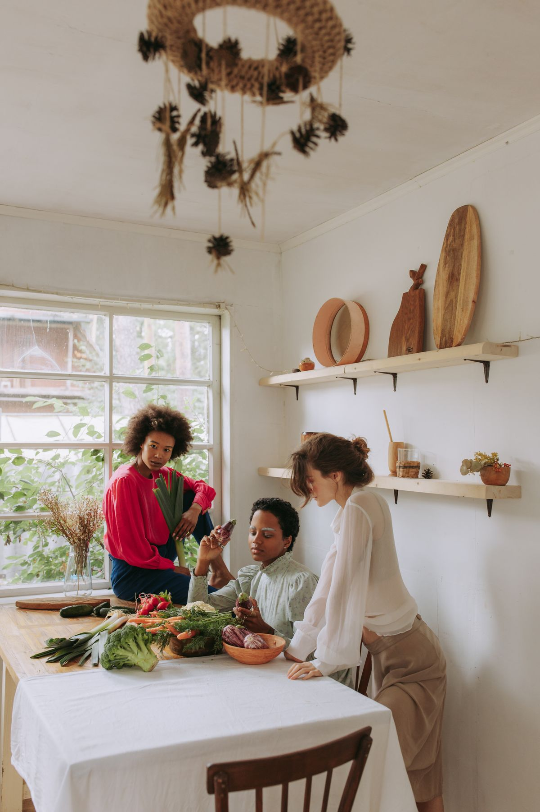

01 — Residential Treatment
A structured place to stabilize and grow.
Structured, 24-hour residential care supporting stabilization, recovery skills and increasing independence in a warm, homelike environment.